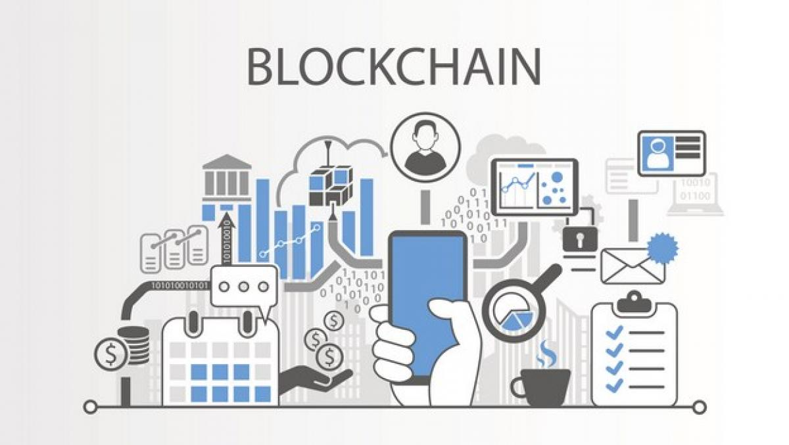

Lo primero es contextualizarlo. Blockchain significa “cadena de bloques”, su propio nombre nos será muy ilustrativo más adelante para comprender cómo funciona. Nació como actor secundario en la revolución del bitcoin, ya que se trata de la tecnología o el sistema de codificación de la información que está por detrás de la moneda virtual y que sustenta toda su estructura. Pronto se vio el potencial que tenía por sí misma y la cantidad de aplicaciones que permite en otras áreas más allá de las transacciones financieras, como la administración pública o el Internet de las cosas.
